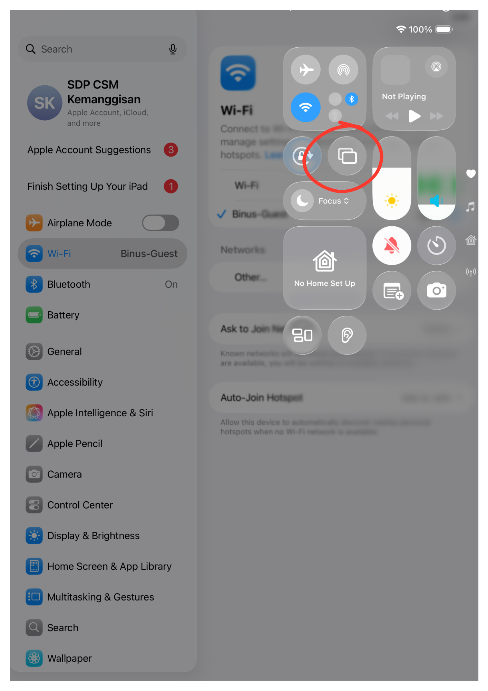

How do I connect to a meeting room TV?
You can connect to the meeting room TV via AirPlay
What do I need to check first?
- Connect to one of the following Wi-Fi networks: Access Wifi
- The device is already connected to the Wi-Fi network. Please make sure it is not connected to a VPN, as it will not be able to connect to the meeting room TV.
- Ensure the meeting room system is turned on
Connecting to the TV in a meeting room AirPlay Via MacBook
Steps to connect
Step 1:
Click Control Center in the top-right corner.
Click Control Center in the top-right corner.
Step 2:
Select Screen Mirroring.
Step 3:
Select "Choose the device named TV (SBR-SmartTV)"
Select "Choose the device named TV (SBR-SmartTV)"
Step 4:
Enter the AirPlay code for verification; the passcode will appear on the TV screen
Enter the AirPlay code for verification; the passcode will appear on the TV screen

Step 5:
Your screen will be displayed on the TV
Your screen will be displayed on the TV
Connecting to the TV in a meeting room AirPlay Via iPad Or iPhone
Steps to connect
Step 1:
Swipe down from the top-right corner of the screen to access Control Center
Swipe down from the top-right corner of the screen to access Control Center
Step 2:
Select Screen Mirroring.

Step 3:
Select "Choose the device named TV (SBR-SmartTV)"
Select "Choose the device named TV (SBR-SmartTV)"

Step 4:
Enter the AirPlay code for verification; the passcode will appear on the TV screen
Enter the AirPlay code for verification; the passcode will appear on the TV screen

Step 5:
Your screen will be displayed on the TV
Your screen will be displayed on the TV
Tips
- If device not detected, try manual connection
- Check network connection
- Restart device if connection fails